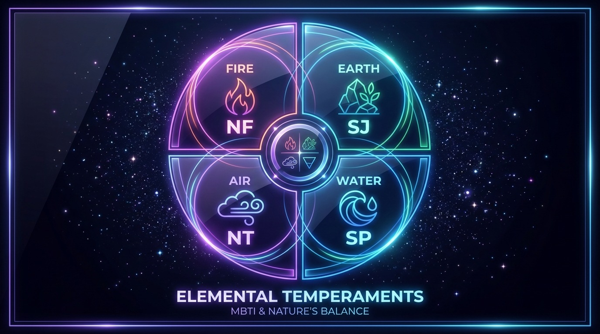
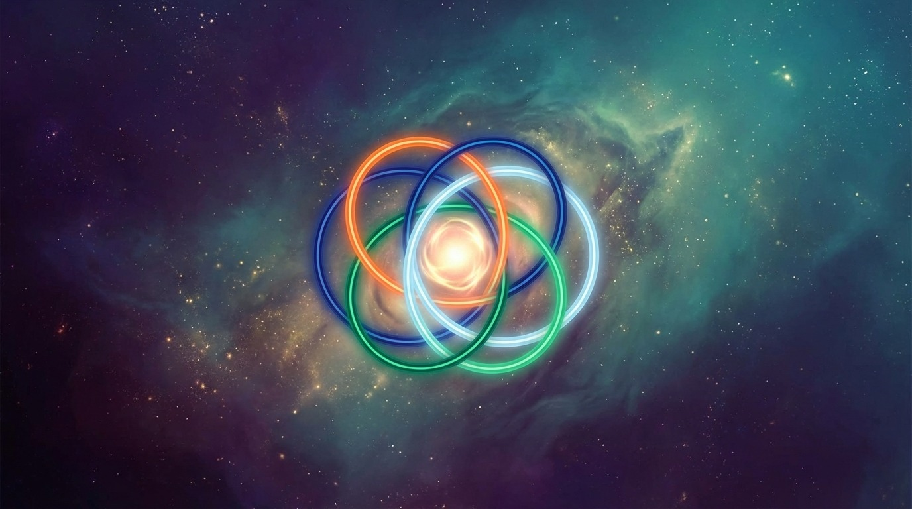

2월 21–3월 2일 별자리 금전운 10일 요약
핵심: 2월 21–3월 2일 금전 흐름을 선별·균형 중심으로 요약했습니다.
안내: 본 글은 엔터테인먼트를 위한 참고용 정보이며, 투자·재무 조언이 아닙니다.
1. 10일 흐름 한 줄 정리
이 구간의 키워드는 선별, 균형, 누적입니다. 지출과 수입의 리듬을 맞추면 작은 차이가 크게 체감되는 10일이에요.
한 줄 요약: 크게 벌기보다, 흐름을 매끈하게 다듬는 10일.

2. 별자리별 금전운 한 줄 요약
- 양자리: 지출 속도를 하루 늦추면 불필요한 항목이 드러납니다.
- 황소자리: 오래 유지할 것만 남기면 돈이 편해져요.
- 쌍둥이자리: 비교 후 “지금 필요” 기준을 세우면 절약이 됩니다.
- 게자리: 집·가족 지출은 범위부터 합의하면 안전해요.
- 사자자리: 브랜드보다 사용 빈도에 투자하면 체감이 큽니다.
- 처녀자리: 가계부 한 줄이 전체 리듬을 잡아줘요.
- 천칭자리: 함께 사면 이득, 혼자 사면 지출이 커집니다.
- 전갈자리: 자동결제·갱신일 점검이 절약의 핵심.
- 사수자리: 경험 소비는 OK, 상한선은 꼭 고정하세요.
- 염소자리: 저축 날짜를 고정하면 안정감이 올라갑니다.
- 물병자리: 부수입 아이디어는 실행일을 정해야 현실화돼요.
- 물고기자리: 감정 소비는 “24시간 보류”가 답입니다.

3. 실천 체크리스트
1) 10일 지출 상한선 한 줄 적기
복잡한 계획보다 한 줄이 강해요. “이 정도까지만 쓰자”가 흐름을 잡아줍니다.
2) 고정비 하나 재검토
유지할 가치가 있는지 다시 보세요. 작은 조정이 체감 효과를 줍니다.
3) 지출 카테고리 1개만 줄이기
커피, 배달, 쇼핑 중 하나만 줄여도 리듬이 눈에 띄게 정리돼요.
4. 돈 흐름이 좋아지는 신호
• 자동결제 알림이 유난히 잘 보인다
• 자잘한 환불·정산이 들어온다
• 지출 기록이 더 간단해진다
• 작은 절약이 확실히 체감된다
5. 마무리 리듬 정리
이번 구간은 “큰 기회”보다 “균형”이 힘을 발휘합니다. 지출을 완전히 막기보다, 흐름을 다듬는 데 집중해 보세요.
10일 뒤에는 더 가벼운 마음과 안정된 리듬을 체감할 수 있을 거예요.